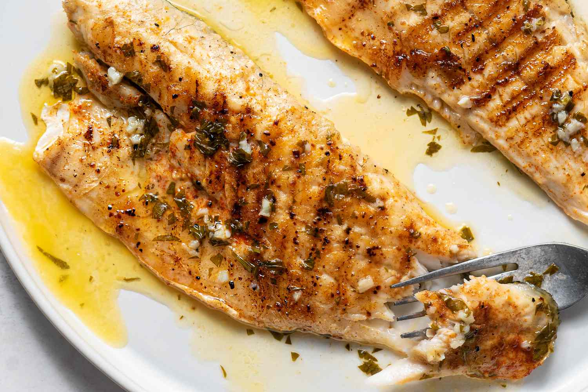

Grilled Sea Bass

Perfect grilled sea bass, worthy of your favorite restaurant, is just 40 minutes away. Make sure to bookmark this flavorful and flaky grilled sea bass recipe — you'll come back to it again and again.
Ingredients
- Sea Bass
- Spices & seasonings
- Butter
- Olive oil
Directions
- Preheat grill for high heat
- In a small bowl, stir together the garlic powder, onion powder, paprika, lemon pepper, and sea salt. Sprinkle seasonings onto the fish.
- In a small saucepan over medium heat, melt the butter with the garlic and parsley. Remove from heat when the butter has melted, and set aside.
- Lightly oil grill grate. Grill fish for 7 minutes, then turn and drizzle with butter. Continue cooking for 7 minutes, or until easily flaked with a fork. Drizzle with olive oil before serving.